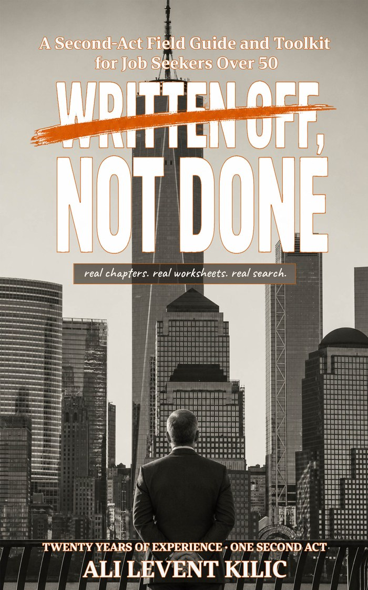

A field guide & toolkit · $9.99 on Kindle
Age bias is real. So is a bad resume, a shrinking industry, and an interview you didn't prepare for. This book helps you tell the difference — then do something about whichever one you've actually got.
15 chapters · 12 ready-to-use toolkits · every statistic named, dated, and sourced

64% of workers over 50 have witnessed or personally experienced age discrimination at work (AARP, 2025). 74% believe age is a barrier to getting hired. You didn't imagine it — but knowing it's real doesn't get you a job. Routing around it does.
Inside the book
Every chapter ends with something you can use in the next hour — a script, a checklist, a worksheet. The goal is a job offer, not a mood boost.
The toolkit
Checklists, scripts, scorecards, and AI prompts — the same ones the author used in his own search, not theory from a coaching course.
Read it first
Read “The Zoom call that explains everything” and the opening of Part 1 before you spend a cent. We'll email you the PDF right away.
Written Off, Not Done — a second-act field guide and toolkit for job seekers over 50. Available now on Amazon Kindle for $9.99.
Buy on Amazon Kindle — $9.99 →